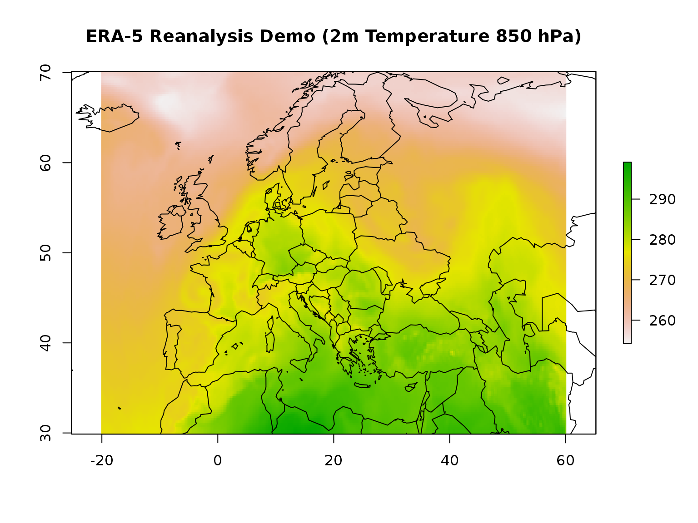

Downloading Data Sets from Copernicus’s Climate Data Store
Copernicus.eu provides a set of interesting data sets for research, education, and applied earth sciences on their Climate Data Store (CDS). Among the different data sets there is the latest ECMWF high-resolution reanalysis data set which replaces ERA Interim (which was ERA-4; version 4). The R package ecmwfr provides a convenient interface to download these data sets.
Before Downloading Data
Before you will be able to download any data you need to get a free personal account.
To retrieve data ecmwfr use wf_set_key()to add the login details to your local keyring (requires the R package keyring).
Once you are in possession of your personal user (namely your user ID and a secret key) ecmwfr allows to send requests to CDS and/or download the data.
The Request Syntax
CDS data retrievals are based on a list object which specifies the data set to be downloaded. These definitions are called requests (for those who are familiar with mars: these are basically mars requests). A request defined the type of the dataset, the variables to be downloaded, the time period, output format, target location, a custom area extent, and other details.
The request syntax is available for a range of different CDS data sets. Check the CDS Dataset website to see a list of available datasets and to check whether API requests are allowed or not (go to Download Data, select some data, show request by clicking Show API Request (red button, bottom of page).
The conversion from a python based string to the list format can be automated if you use the RStudio based Addin. By selecting and using Addin -> python to list (or ‘Mars to list’) you dynamically convert queries copied from either ECMWF or CDS based services.

An ERA-5 example
# Specify the data set
request <- list("dataset" = "reanalysis-era5-pressure-levels",
"product_type" = "reanalysis",
"variable" = "temperature",
"pressure_level" = "850",
"year" = "2000",
"month" = "04",
"day" = "04",
"time" = "00:00",
"area" = "70/-20/30/60",
"format" = "netcdf",
"target" = "era5-demo.nc")This is the “demo” request and it specifies the following:
-
dataset: downloading ERA-5 reanalysis on pressure level(s) -
product_type: (deterministic) reanalysis data -
variable/pressure_level: requesting temperature on 850 hectopascal -
year/month/day: April 4, 2000 (one day in this example) -
time: valid at 00:00 UTC (date/time always in UTC), -
area: custom subset covering northern Europe -
format: output format NetCDF -
target: local output fileera5-demo.nc
The data set as specified above can be downloaded calling the wf_request function:
# Start downloading the data, the path of the file
# will be returned as a variable (ncfile)
ncfile <- wf_request(user = "2088",
request = request,
transfer = TRUE,
path = "~",
verbose = FALSE)Depending on the request (the amount of data you are asking for) the request function may tike a while! Please note: if you try to download larger amounts of data it is suggested to split the data sets, e.g., download year-by-year, or even month-by-month, if you are trying to download several varaiables/fields.
Once the retrieval has finished you should now be the owner of a NetCDF containing the requested information located in the current working directory, called era5-demo.nc.
Quick check:
# Open NetCDF file and plot
r <- raster::raster(ncfile)
raster::plot(r, main = "ERA-5 Reanalysis Demo (2m Temperature 850 hPa)")
maps::map("world", add = TRUE)
Date period specification
For those familiar to ECMWF mars syntax: CDS does not accept date = "2000-01-01/to/2000-12-31" specifications at the moment. It is possible to specify one specific date via date = "2000-01-01" or multiple days via date = ["2000-01-01","2000-01-02","2000-10-20"] but not via ".../to/...".